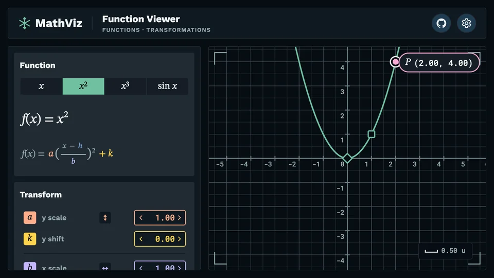

Interfaces that feel effortless.
I'm Niels, a UI engineer. I build interfaces and visualizations that invite you to explore.
niels.nielsen@gmail.com See the work
Decorative plot: a grid with axes and three curves, a wave, a parabola and a cubic. The wave stretches and shifts as the pointer moves.
End to End Ownership
ProtectWise
- The founders hired me as the first UI engineer. I built the UI from the first commit and led it, with the customer-facing API, for 8.5 years.
- I designed it with Jake Sargeant, the effects artist behind Tron Legacy and Oblivion: desktop-grade, real-time security visuals in a browser, fed by a WebSocket API I built on Kafka streams.
- As tech lead of the UI and API team, I helped direct the team, assigned work and mentored engineers.
Modern Workflows
math-viz
Drag a curve yourself in the live Function Viewer.

How it was built, in six steps
- 01 Concept An image model drew galleries of concept art; six pictures set the direction.
- 02 Fonts Test pages set each candidate font in the app's own strings.
- 03 Colors Generated themes, checked for contrast; six kept, three light and three dark.
- 04 Prototype A React prototype for behavior that is hard to describe in a spec.
- 05 Figma A UX agent designed 13 rounds in Figma, then merged the best ideas into one design.
- 06 Development I set the architecture, an AI coding agent matched the styles, and I hunted the jank.
I direct AI tools the way I'd direct a team: I set the direction and the architecture, and I own the result.
Read the code on GitHub, or open the live app on GitHub Pages.
Custom Tooling
WebSocket Text Relay
It sends your edits from the editor to the browser as you type, so you see each change without saving the file or reloading the page.

- I built it to tune the ProtectWise visuals, where even a 5-second rebuild broke the flow of several changes a second.
- It started as a Vim hack on my machine. I rebuilt it as a language server with Neovim, VS Code and Vite plugins so any web developer can use it.
- I still use it: math-viz was built on it, and so was the status page above.
Read the code on GitHub.